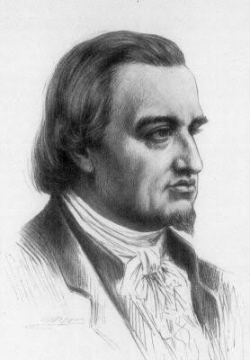
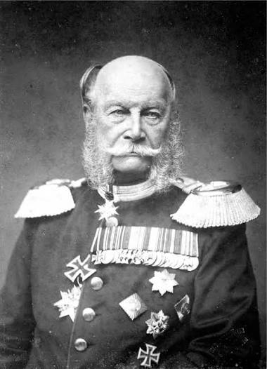
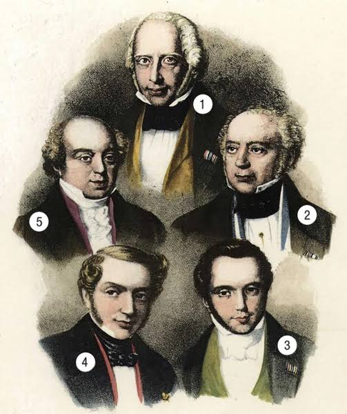

Вітаю, мене звуть Джейкоб Ротшильд. Моя сім’я оцінюється в 500 трильйонів доларів. Ми володіємо багатьма центральними банками світу. З часів Наполеона ми фінансуємо обидві сторони кожної війни. Ми володіємо вашими новинами, медіа, вашою нафтою та вашим урядом. Ви, мабуть, ніколи не чули про мене”. Це лише один із тисяч дописів у мережі, присвячених загадковій могутній династії Ротшильдів. Про реальну історію та сучасне життя родини читайте у нашій статті.
- АРИСТОКРАТИЧНЕ ХОБІ
- ФІНАНСИСТ КНЯЗЯ
- ГРОШІ ЛЮБЛЯТЬ ТИШУ
- КРЕДИТ ЗА РІВНІ ПРАВА
- ТЕОРІЇ ЗМОВИ
Першим з роду, хто зміг увірватися у світ великих грошей, був Маєр Амшель Ротшильд (1744-1812) — він і вважається засновником династії. Маєр походив з родини дрібних крамарів, які мешкали в єврейському гетто на околиці німецького міста Франкфурт. Їхній будинок можна було знайти за червоною вивіскою, то й самі крамарі отримали прізвисько Ротшильдів (німецькою — “червона дощечка” або “червоний дах”). Згодом родина переїхала до будинку “під пательнею”, але зберегла прізвисько, яке Маєр згодом почав використовував як прізвище.

Після навчання Маєр змушений був повернутися до франкфуртського гетто — цього вимагав закон. І захопився… нумізматикою. Хобі аж надто аристократичним як для крамаря. Але навіть перебираючи лахміття, він знаходив в кишенях старих речей затерті монети або ж медальони, з яких зібрав чималеньку колекцію. Деякі екземпляри Маєр намагався виміняти чи продати знавцям — і це дозволило йому розширити коло спілкування, завівши знайомства з межами гетто.
ФІНАНСИСТ КНЯЗЯ
Маєр настільки задоволений успіхом, що запропонував йому усю свою колекцію в подарунок. Розчулений вельможа одразу ж надав дарувальнику статус “антиквара і постачальника двору”. Красива легенда — але не дуже правдива, бо в князівському архіві зберігся запис про те, що за колекцію він таки заплатив — трохи більше 38 гульденів.

Звісно, такі виплати були для князя дрібничкою. Вільгельм був людиною дуже заможною. Успадкувавши престол і титул курфюрста, він позичав іншим європейським володарям не лише гроші, а й солдат — за яких також розплачувалися дзвінкою монето. Гессенці воювали навіть під британським прапором — проти повсталих американських колоністів. Втім, гучний титул не завжди дозволяв Вільгельму вести фінансові справи особисто. Для делікатних доручень була потрібна довірена особа, і врешті він зупинився на Маєрі, у надійності якого на той час увпевнився. До того ж Ротшильд виявився справді талановитим організатором і фінансистом. Він не лише допомагав князю збирати гроші з його поважних боржників. Ротшильд вміло використовував можливості, які відкрилися з початком індустріальної революції в Британії. Перепродуючи англійські товари, він уникав необхідності перевозити великі суми грошей і при цьому приносив графу додатковий прибуток.Коли Гессен був захоплений військами Наполеона, і князь змушений був рятуватися втечею, Ротшильд не лише зберіг його капітали, але й забезпечив володарю безтурботне життя у вигнанні. Тепер колишній антиквар міг розпоряджатися князівськими грошима так, як вважав за потрібне. Маючи під рукою величезні — хоча й не свої кошти, Маєр розпочав створення власної фінансової імперії — спираючись на синів, яких в нього було п’ятеро. За родинні справи в Британії відповідав Натан, у Франції оселився Якоб, у Відні — Соломон, в Неаполі — Калман. Старший син Амшель разом із батьком і надалі жив у Франкфурті, окупованому французами. Компанії, засновані синами, за паперами були незалежними одна від одної, але насправді їхні кошти були спільними. Узгоджувати дії власників дозволяла єдина система зв’язку і кур’єрська служба.
